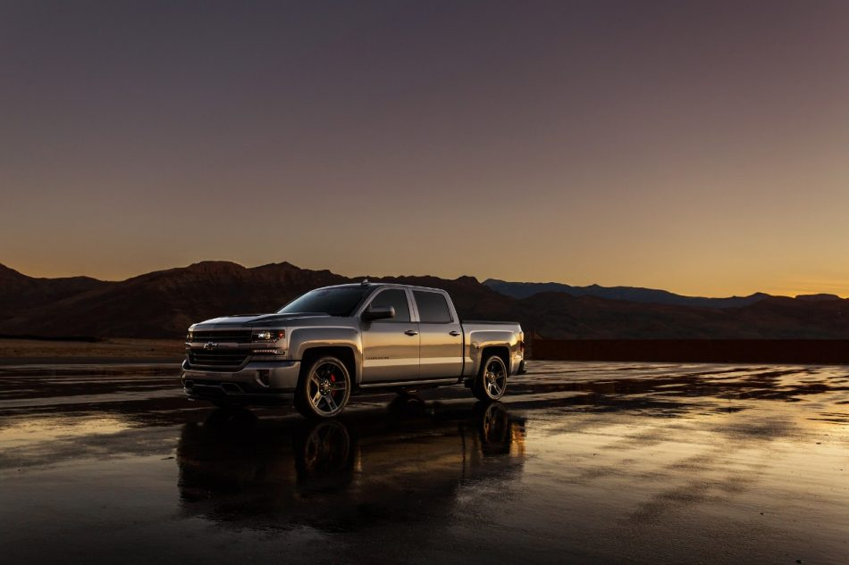

The Chevy Silverado has one of the best performance rates for any other trucks. It is rated overall 8.3
stars out of 10. The Silverado comes with 2 main engine options, V6, V8. The V6 is the most fuel efficient and
good for everyday driving, the V8, however, is stronger and a better choice for hauling. The V6 has 285 horsepower
and the V8 has a total of 355 horsepower. The Silverado can have up to 420 horsepower.
The Silverado drives smoothly on all types of roads. It comes with
rear-wheel-drive and 4-wheel-drive, making it perfect for off road. The Silverado stays comfortable when driving
on imperfect roads and absorbs shock well. The steering is very accurate and the braking is sturdy. The Silverado
has a maximum towing capacity of 12,500 pounds. Even with a heavy load the Silverado does not feel over demanded.
